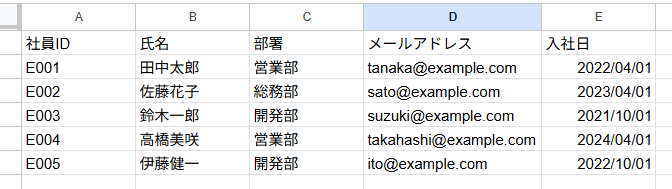
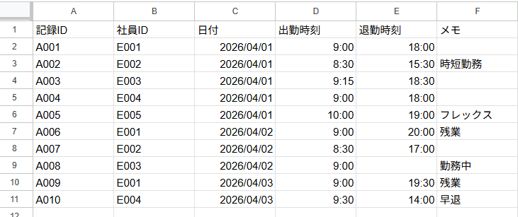
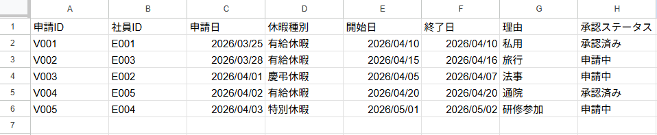
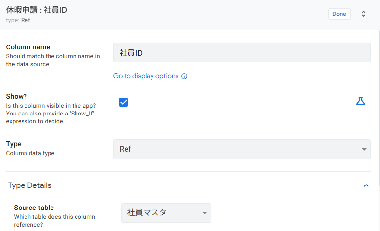
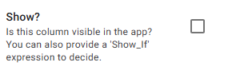

データを設計しよう
2-1 スプレッドシートでデータを準備する
第1章で設計した3テーブル（社員マスタ・勤怠記録・休暇申請）をGoogleスプレッドシートに作成します。
■ 新しいスプレッドシートを作成する
Google ドライブ（https://drive.google.com）を開きます。
左上の 「+ 新規」→「Google スプレッドシート」→「空白のスプレッドシート」 をクリックします。
ファイル名を 「勤怠管理アプリ_データ」 に変更します。
■ シート①「社員マスタ」を作成する
画面下部のシートタブ名「シート1」をダブルクリックして、「社員マスタ」 に名前を変更します。
下の枠内をすべて選択してコピーし、スプレッドシートの A1セル に貼り付けてください。
社員ID 氏名 部署 メールアドレス 入社日 E001 田中太郎 営業部 tanaka@example.com 2022/04/01 E002 佐藤花子 総務部 sato@example.com 2023/04/01 E003 鈴木一郎 開発部 suzuki@example.com 2021/10/01 E004 高橋美咲 営業部 takahashi@example.com 2024/04/01 E005 伊藤健一 開発部 ito@example.com 2022/10/01

■ シート②「勤怠記録」を作成する
画面下部の 「＋」 ボタンをクリックして新しいシートを追加し、名前を 「勤怠記録」 に変更します。
下の枠内をコピーし、A1セルに貼り付けてください。
記録ID 社員ID 日付 出勤時刻 退勤時刻 メモ A001 E001 2026/04/01 9:00 18:00 A002 E002 2026/04/01 8:30 15:30 時短勤務 A003 E003 2026/04/01 9:15 18:30 A004 E004 2026/04/01 9:00 18:00 A005 E005 2026/04/01 10:00 19:00 フレックス A006 E001 2026/04/02 9:00 20:00 残業 A007 E002 2026/04/02 8:30 17:00 A008 E003 2026/04/02 9:00 勤務中 A009 E001 2026/04/03 9:00 19:30 残業 A010 E004 2026/04/03 9:30 14:00 早退

・残業あり（9時間以上）：A006（11h）、A009（10.5h）
・通常勤務（8〜9時間）：A001（9h）、A003（9.25h）、A004（9h）、A005（9h）、A007（8.5h）
・時短勤務（8時間未満）：A002（7h）、A010（4.5h）
・勤務中（退勤時刻が空欄）：A008
■ シート③「休暇申請」を作成する
同様に新しいシートを追加し、名前を 「休暇申請」 に変更します。
下の枠内をコピーし、A1セルに貼り付けてください。
申請ID 社員ID 申請日 休暇種別 開始日 終了日 理由 承認ステータス V001 E001 2026/03/25 有給休暇 2026/04/10 2026/04/10 私用 承認済み V002 E003 2026/03/28 有給休暇 2026/04/15 2026/04/16 旅行 申請中 V003 E002 2026/04/01 慶弔休暇 2026/04/05 2026/04/07 法事 申請中 V004 E005 2026/04/02 有給休暇 2026/04/20 2026/04/20 通院 承認済み V005 E004 2026/04/03 特別休暇 2026/05/01 2026/05/02 研修参加 申請中

■ データ入力の確認
- スプレッドシートのファイル名を「勤怠管理アプリ_データ」に設定した
- シート名が「社員マスタ」「勤怠記録」「休暇申請」の3つになっている
- 各シートの1行目にヘッダー行（項目名）が入力されている
- 「社員マスタ」に5名分のデータがある
- 「勤怠記録」に10件分のデータがある
- 「休暇申請」に5件分のデータがある
- セルの結合を使っていない
- データの途中に空白行がない
2-2 AppSheetアプリを生成し、テーブルを取り込む
スプレッドシートからAppSheetアプリを生成し、3つのテーブルをすべて取り込みます。
■ アプリを作成する
「勤怠管理アプリ_データ」スプレッドシートを開きます。
メニューバーの 「拡張機能」→「AppSheet」→「アプリを作成」 をクリックします。
AppSheetエディタが開き、最初のシートのテーブルが自動で取り込まれます。
■ 残りのテーブルを追加する
アプリ作成直後は1つのテーブルしか取り込まれていない場合があります。残りのテーブルを追加します。
左ナビゲーションの 「Data」 をクリックします。
テーブル一覧の左上にある 「+」（Add new table） をクリックします。
「Google Sheets」 を選択し、同じスプレッドシート内の未追加シートを選んで 「Add」 をクリックします。
3つのテーブル（社員マスタ・勤怠記録・休暇申請）がすべて表示されるまで繰り返します。
2-3 カラム型（データ型）を設定する
各テーブルのカラム型を確認・修正します。初級編と同じ要領ですが、中級編では Time型（時刻）や Email型 など、新しい型も使用します。
■ 「社員マスタ」テーブルのカラム型
| カラム名 | 設定するTYPE | KEY | LABEL | 補足 |
|---|---|---|---|---|
| 社員ID | Text | ✅ ON | — | 一意のID |
| 氏名 | Name | — | ✅ ON | アプリ上の表示名になる |
| 部署 | Enum | — | — | 営業部 / 総務部 / 開発部 |
| メールアドレス | — | — | Automation のメール送信先に使用 | |
| 入社日 | Date | — | — | 日付型 |
■ 「勤怠記録」テーブルのカラム型
| カラム名 | 設定するTYPE | KEY | LABEL | 補足 |
|---|---|---|---|---|
| 記録ID | Text | ✅ ON | ✅ ON | Initial Value に UNIQUEID() を設定 |
| 社員ID | Ref | — | — | ⭐ 2-4 で Ref 設定（参照先：社員マスタ） |
| 日付 | Date | — | — | 勤務日 |
| 出勤時刻 | Time | — | — | 時刻型（HH:MM） |
| 退勤時刻 | Time | — | — | 空欄 = 勤務中 |
| メモ | Text | — | — | 備考欄 |
■ 「休暇申請」テーブルのカラム型
| カラム名 | 設定するTYPE | KEY | LABEL | 補足 |
|---|---|---|---|---|
| 申請ID | Text | ✅ ON | ✅ ON | Initial Value に UNIQUEID() を設定 |
| 社員ID | Ref | — | — | ⭐ 2-4 で Ref 設定（参照先：社員マスタ） |
| 申請日 | Date | — | — | 申請を行った日付 |
| 休暇種別 | Enum | — | — | 有給休暇 / 慶弔休暇 / 特別休暇 |
| 開始日 | Date | — | — | 休暇の開始日 |
| 終了日 | Date | — | — | 休暇の終了日 |
| 理由 | Text | — | — | 申請理由 |
| 承認ステータス | Enum | — | — | 申請中 / 承認済み / 差戻し |
各テーブルをクリックし、上記の表の通りに TYPE を確認・修正します。
すべて設定したら、右上の 「Save」 ボタンで保存します。
2-4 Ref（リレーション）を設定する
「勤怠記録」と「休暇申請」の両方から「社員マスタ」を参照する 複数Ref を設定します。これが中級編のデータ設計の核心です。
社員ID → Ref（社員マスタ）
日付 / 出勤時刻 / 退勤時刻 …
氏名（LABEL）
部署 / メールアドレス …
社員ID → Ref（社員マスタ）
休暇種別 / 承認ステータス …
■ 「勤怠記録」テーブルの社員IDにRefを設定する
Data → 「勤怠記録」 テーブルのカラム一覧を開きます。
「社員ID」 の TYPE をクリックし、「Ref」 を選択します。
「Source table」 で 「社員マスタ」 を選択し、「Done」 をクリックします。
右上の 「Save」 で保存します。
■ 「休暇申請」テーブルの社員IDにRefを設定する
同様に Data → 「休暇申請」 テーブルの 「社員ID」 の TYPE を 「Ref」 に変更します。
「Source table」 で 「社員マスタ」 を選択し、「Done」 → 「Save」 で保存します。

・勤怠記録・休暇申請の入力時に、社員名を ドロップダウンから選択 できる
・社員マスタの詳細画面から、その社員の 勤怠記録と休暇申請を一覧表示 できる
・社員の氏名や部署が変更されても、参照先（社員マスタ）を1箇所修正するだけ で全テーブルに反映される
2-5 Initial Value と KEY / LABEL を設定する
初級編と同様に、KEY列の Initial Value に UNIQUEID() を設定します。中級編では2つのテーブルに設定が必要です。
■ 設定対象
| テーブル | カラム | Initial Value | 説明 |
|---|---|---|---|
| 勤怠記録 | 記録ID | UNIQUEID() | 新規打刻時にIDを自動生成 |
| 休暇申請 | 申請ID | UNIQUEID() | 新規申請時にIDを自動生成 |
■ 設定手順（2テーブル分繰り返し）
Data → 対象テーブルのカラム一覧で、KEYカラム（記録ID / 申請ID）の 鉛筆マーク（✏️ Edit） をクリックします。
詳細設定パネルを下にスクロールし、「Initial value」 に UNIQUEID() と入力します。
右上の 「Save」 で保存します。
■ 追加の Initial Value 設定
利便性を上げるために、以下のカラムにも Initial Value を設定しておきましょう。
| テーブル | カラム | Initial Value | 効果 |
|---|---|---|---|
| 勤怠記録 | 日付 | TODAY() | 新規打刻時に今日の日付が自動入力 |
| 勤怠記録 | 出勤時刻 | TIMENOW() | 新規打刻時に現在時刻が自動入力 |
| 休暇申請 | 申請日 | TODAY() | 新規申請時に今日の日付が自動入力 |
| 休暇申請 | 承認ステータス | "申請中" | 新規申請時に「申請中」が自動入力 |
上記の各カラムの鉛筆マーク（✏️ Edit）をクリックし、「Initial value」 に式を入力します。
すべて設定したら 「Save」 で保存します。
■ ID列をユーザーに見せない（SHOW? の設定）
社員ID・記録ID・申請IDなどの KEY列 は、AppSheet がデータを内部管理するために必要ですが、アプリを使う人にとっては意味のない英数字の羅列です。これらを画面に表示したままだと、一覧画面や詳細画面が見づらくなります。
左メニューの Data をクリックし、対象テーブル（例：社員マスタ）を選択します。
カラム一覧で 「社員ID」 の行にある SHOW? のトグルを OFF（灰色）にします。

同様に、勤怠記録 テーブルの「記録ID」、休暇申請 テーブルの「申請ID」も SHOW? を OFF にします。
右上の Save をクリックして保存します。
以下の表に、各テーブルで非表示にすべきカラムをまとめます。
| テーブル | カラム名 | SHOW? | 理由 |
|---|---|---|---|
| 社員マスタ | 社員ID | OFF | 内部管理用のKEY。ユーザーに見せる必要なし |
| 勤怠記録 | 記録ID | OFF | UNIQUEID() で自動生成されるKEY |
| 休暇申請 | 申請ID | OFF | UNIQUEID() で自動生成されるKEY |
2-6 ビューを作成して動作確認する
データ設定が完了したら、基本的なビューを作成してプレビューで動作確認します。
■ 各テーブルのビュー設定
| ビュー名 | View type | Position | 補足 |
|---|---|---|---|
| 勤怠記録 | table | first | ホーム画面。出退勤データを表形式で表示 |
| 休暇申請 | table | next | 休暇申請を表形式で表示。承認ステータスが一覧で確認しやすい |
| 社員マスタ | table | next | 社員一覧。管理者が社員情報を確認する用 |
左ナビゲーションの 「App」→「Views」 を開きます。
各ビューの View type と Position を上記の表の通りに設定します。
右上の 「Save」 で保存します。
■ プレビューで動作確認
設定が完了したら、プレビューで以下を確認してください。
- ナビゲーションに「勤怠記録」「休暇申請」「社員マスタ」の3つが表示されている
- 勤怠記録の一覧にサンプルデータが表示されている
- 勤怠記録の「＋」ボタンをタップすると、社員IDがドロップダウンで選択できる
- 社員マスタの任意の社員をタップすると、詳細画面にその社員の勤怠記録と休暇申請がインライン表示される
- 休暇申請の一覧にサンプルデータが表示されている
■ 第2章のまとめ
| No. | やったこと | ポイント |
|---|---|---|
| 1 | 3シート構成のスプレッドシート作成 | 社員マスタ・勤怠記録・休暇申請の3テーブル |
| 2 | AppSheetアプリの生成とテーブル追加 | 拡張機能から作成 → 残りテーブルを手動追加 |
| 3 | カラム型の設定 | Time型・Email型・Enum型を新しく使用 |
| 4 | 複数Refの設定 | 勤怠記録・休暇申請の両方から社員マスタを参照 |
| 5 | Initial Value の設定 | UNIQUEID() / TODAY() / TIMENOW() で自動入力 |
| 6 | ビュー作成と動作確認 | 3つのビューを作成しプレビューで確認 |